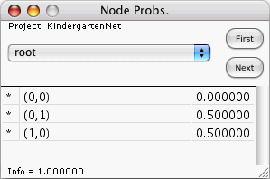

This window displays the probability distribution of the node whose name appears on the face of the window's popup. The window displays this distribution for the latest e-case analyzed by the computer.
The popup of this window lists all nodes.
For the node selected in the popup and for the latest e-case:
None of the entries of this table can be edited directly by the user.